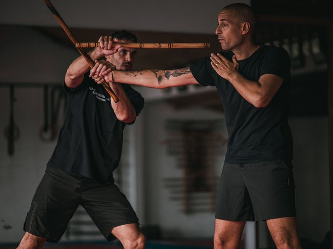
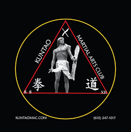

O PKS (Pimenta Kali System), desenvolvido pelo Mestre Pimenta, é um estilo brasileiro de defesa pessoal inspirado nas artes marciais filipinas, especialmente o Kali Filipino e o Panantukan. O sistema se caracteriza por uma abordagem direta, simples e altamente funcional, voltada para situações reais de confronto. Vídeos de demonstração mostram que o PKS enfatiza movimentos práticos com mãos vazias, destruições, controle de braços, entradas anguladas e técnicas integradas de bastão, faca e combate próximo, sempre priorizando timing, coordenação e eficiência. A filosofia do estilo reforça princípios como simplicidade, eficácia e sobrevivência, tornando o método acessível tanto para iniciantes quanto para praticantes experientes. Além disso, o PKS se consolidou como um sistema adaptado ao contexto urbano brasileiro, focado em defesa pessoal moderna e aplicável a diferentes públicos.
Um outro estilo muito reconhecido dentro do Kali Silat é o Pekiti-Tirsia Kali, originário da região de Visayas, nas Filipinas, e tradicionalmente preservado pela família Tortal. Esse sistema foi desenvolvido com foco absoluto em combate real, priorizando movimentos curtos, precisos e altamente letais. O Pekiti-Tirsia enfatiza o uso de lâminas — refletindo um contexto histórico em que facas, espadas curtas e outras armas cortantes eram parte do cotidiano e organiza seu treinamento de forma estratégica, baseada em linhas de ataque, contragolpes angulados e destruição das armas do oponente. A filosofia desse estilo valoriza a agressividade controlada, a ofensividade como defesa e a tomada rápida de vantagem, criando um praticante capaz de responder a ameaças com velocidade, cálculo e técnica refinada.

Outro estilo emblemático é o Kuntao Silat, resultado da fusão entre as artes marciais chinesas tradicionais (Kuntao) e o Silat indígena do arquipélago indonésio. Espalhado por regiões como Java, Sumatra e Bornéu, o Kuntao Silat incorpora a fluidez circular e a manipulação de articulações do kung fu, combinadas às quedas, chaves de braço e movimentos de triangulação típicos do Silat. Sua origem tem base no contato histórico entre mercadores chineses e comunidades locais, criando uma síntese marcial extremamente completa, que engloba combate a curta distância, técnicas de captura, golpes precisos e armas variadas. O estilo se destaca pela capacidade de alternar entre movimentos suaves e explosivos, trazendo uma abordagem que mescla eficiência prática com forte tradição cultural.
